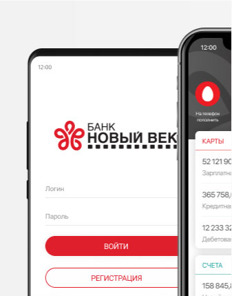
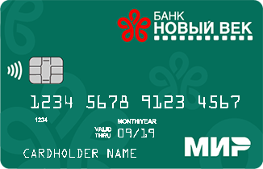
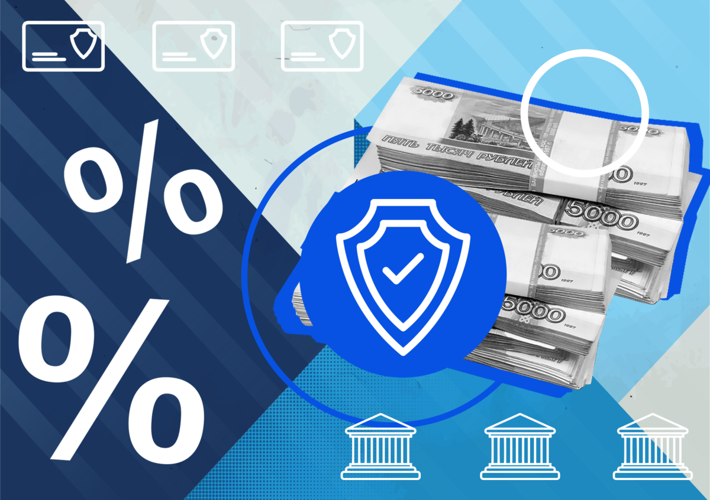

О Банке
Банк Новый век – это неограниченные возможности управления капиталом, самые высокие стандарты финансового сервиса, индивидуальный подход, строгая конфиденциальность персональных данных и особые условия по многим видам банковских услуг.
В основу концепции развития Банка заложена модель универсальной кредитной организации с акцентом на комплексное обслуживание корпоративных клиентов. Приоритетами клиентского обслуживания Банка являются индивидуальный подход и предоставление широкого спектра финансовых продуктов, учитывающих особенности и потребности каждого клиента.
В 2016 году утверждена стратегия Банка, обозначившая кардинально новый вектор развития. Банк «Новый век» стал одним из первых финансовых институтов в России, специализирующихся на работе с организациями и представителями сферы культуры и искусства, музыкального бизнеса и киноиндустрии.
Сегодня культура является уникальным и универсальным инструментом формирования национальной идентичности как основы национального самоуважения. Банк «Новый век» нацелен на создание функциональной среды для полноценного развития культуры и искусства, а также других видов интеллектуального творчества, способствуя укреплению гуманитарного образа России как внутри страны, так и на международной арене.
История и миссия Банка
Коммерческий Банк «Новый век» (Общество с Ограниченной Ответственностью) основан 20 июня 2002 года.
29 августа 2002 года КБ «Новый век» (ООО) был зарегистрирован Банком России в «Книге регистрации кредитных организаций России» под номером 3417.
С 2016 года Банк занимается стратегическим инвестированием в инновационные высокотехнологичные проекты, в том числе в сфере интеллектуальной собственности.
В 2017 года Банк стал ассоциированным членом международной платежной системы MasterCard и начал эмиссию банковских карт категорий Classic, Gold и Black Edition, одновременно запустив линейку зарплатных проектов для своих корпоративных клиентов. Банк обслуживает карту «Мир».
В 2018 году Банк «Новый век» для держателей карт Masterсard запустил платежный сервис бесконтактной оплаты Google Pay - удобный платежный инструмент, позволяющий быстро и безопасно оплачивать покупки с помощью мобильных устройств.
С 2019 года Банк подключился к сервису Apple Pay. Теперь держатели карт Банка Mastercard могут использовать в своих повседневных расходах легкий и безопасный способ оплаты с помощью мобильных устройств.
В 2020 году Банк подключился к Единой биометрической системе (ЕБС).
В октябре 2021 года КБ «Новый век» (ООО) вступил в Российский союз промышленников и предпринимателей.
Сегодня Банк «Новый век» – это:
∙ финансовая устойчивость и сбалансированная стратегия развития;
∙ опыт и профессионализм сотрудников в сочетании с индивидуальным подходом к каждому клиенту;
∙ высокая клиентоориентированность бизнеса;
∙ широкая линейка банковских продуктов и выгодные тарифы;
∙ удобство в обслуживании;
∙ информационная открытость, отвечающая высоким мировым стандартам корпоративного управления;
∙ надежный партнер клиентов, оказывающий поддержку и способствующий развитию.
В своей профессиональной деятельности Банк руководствуется высокими стандартами деловой этики и является частью единой системы морально-этического и правового обеспечения функционирования кредитных организаций в Российской Федерации.
Страхование вкладов
ПОРЯДОК И УСЛОВИЯ ВЫПЛАТЫ ВОЗМЕЩЕНИЯ ПО ВКЛАДАМ В СООТВЕТСТВИИ С ФЕДЕРАЛЬНЫМ ЗАКОНОМ "О СТРАХОВАНИИ ВКЛАДОВ В БАНКАХ РОССИЙСКОЙ ФЕДЕРАЦИИ" от 23.12.2003 № 177-ФЗ